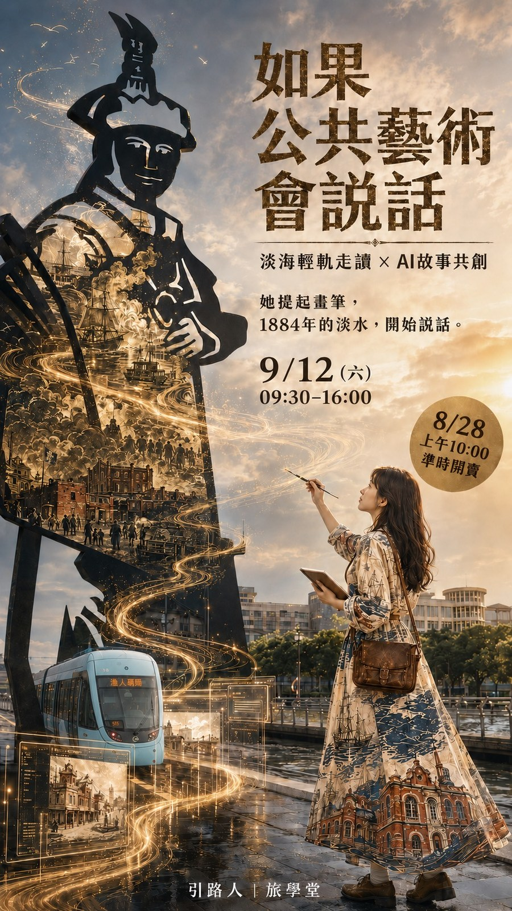

2026 新北市公共藝術推廣計畫《藝術流》
淡海輕軌走讀 × AI 故事共創
她提起畫筆，1884 年的淡水，開始說話。
報名與售票由旅學堂於 Accupass 開放，名額與費用以該頁公告為準。
這一天在做什麼
這是搭配淡海輕軌的行程。月台不是那麼好拍，假日淡水人也多，所以整天的設計是導覽、敘事、AI 生成三段接起來：先聽故事，再把故事講成自己的版本，最後讓 AI 把它變成看得到的畫面。
走完一天，你帶回家的是一張以自己為主角、由當天行程長出來的電影海報。
跟著旅學堂沿淡海輕軌走，聽沿線公共藝術背後的淡水故事。
把聽到的、想起來的，整理成一段屬於自己的敘述。
用手機把那段敘述交給 AI，做成自己的角色與電影海報。
一支手機就可以參加，不需要先會用 AI。
延伸
同一套課程，8/21 綠山線那場已經跑過一次。二十七件學員作品放在成果發表頁，先看那場，就知道 9/12 這天大概會做出什麼。
8/21 綠山線場，四組學員共二十七件作品。
這一場的上課簡報還在製作，做好會放在這裡。